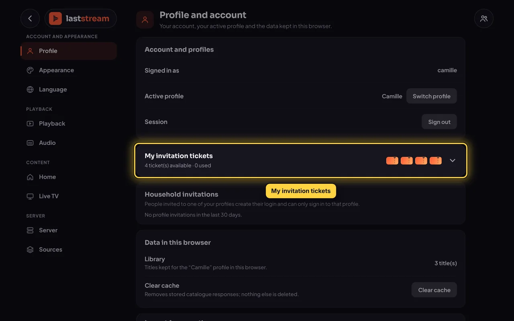
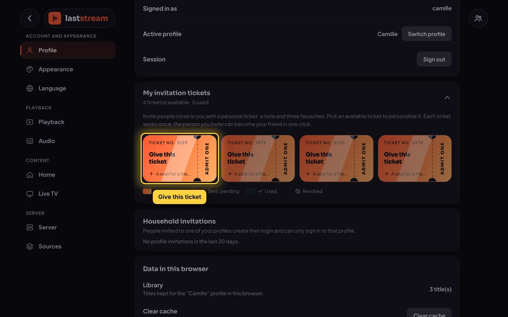
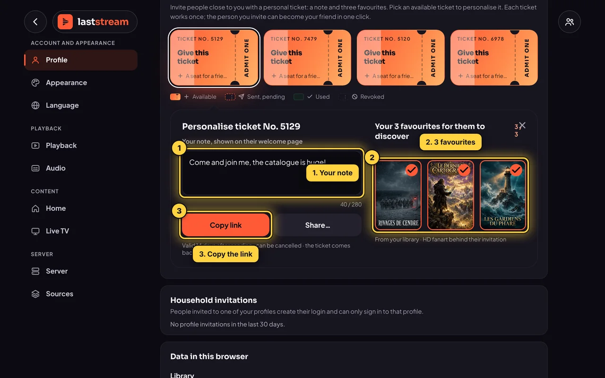
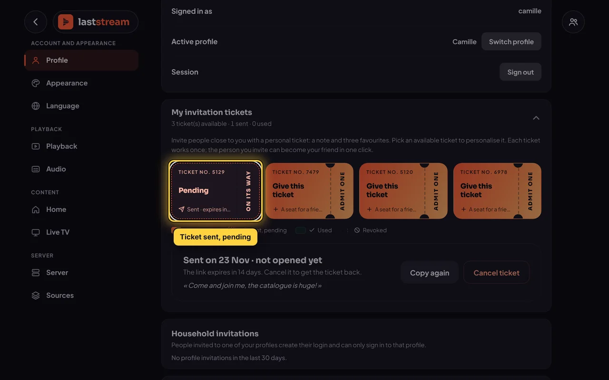

Before you start
- A signed-in account, on an adult profile.
- A few titles in your library if you want to suggest favourites.
Steps
On each screenshot, the yellow frame shows where to tap or click; the numbers give the order. The app is in French: the screenshots show its English translation.
-
Open “Settings” (your avatar at the top right), “Profile” category. Tap “My invitation tickets” to unfold your tickets.

-
Pick an available ticket: “Give this ticket”.

-
Write your note (1, 280 characters max): it shows on their welcome page. Pick up to 3 favourites from your library (2).
Tap “Copy link” (3), or “Share…” to send it straight from your phone.

-
Send the link however you like (message, email…). The ticket shows “Sent, pending” until they create their account.
